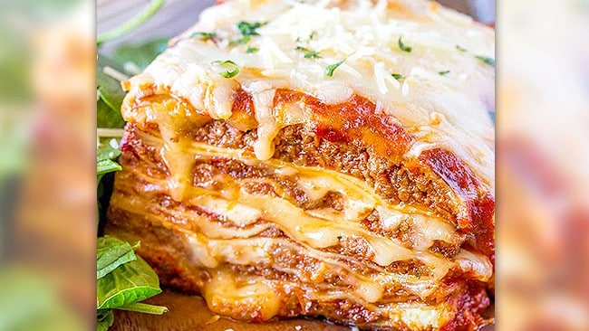

Pasticho

El pasticho es la lasagna, pero solo en Venezuela
se le conoce así, el plato al tocar las costas sufrió cambios
en su nombre original,se adapto al gusto de la época sin perder
su esencia y se convirtió por excelencia en una manjar
ítalo-venezolano.
Su elaboración consiste en tiras de pasta que van formando capas,
las cuales van rellenas de salsa a base de carne y tomate,
alternadas con salsa bechamel y queso parmesano.
Ingredientes
Pasticho
- 4 unidades de tomate
- 1/2 unidad de pimentón rojo
- 1/2 unidad de cebolla
- 2 dientes de ajo
- 350 grs de tomate frito
- 1 cuchara sopera de oregano
- 1 pizca de sal
- 500 grs de carne molida
- 200 grs de queso mozarella
- 100 grs de queso emental
- 1 paquete de láminas de pasta precocida (para lasaña o pasticho)
- 1 cucharada sopera de comino
Salsa Bechamel
- 4 cucharadas soperas de harina de trigo
- 4 cucharadas soperas de mantequilla
- 1 cucharadita de nuez moscada
- 1 pizca de sal
- 1 vaso de leche
Paso para cocinar el pasticho
- El primer paso para hacer el pasticho venezolano es hacer la
salsa Bechamel. O podría
comprarla lista.
- Lo siguiente que se debe hacer es la salsa de tomate. Se tienen
que cortar los tomates en Brunoise.
- Cortar el resto de verduras.La cebolla y el pimenton finamente
y el ajo en láminas. Reserva a parte un par de trozos de pimenton
- Calienta una sartén con aceite y haz un sofrito de tomate,
cebolla,pimiento y ajo.No añadas nada de sal.
- Pasados unos minutos, añade el orégano y el comino molido. Revuelve bien y mezcla las especias
- Cuando el sofrito esté listo, deja una pequeña parte de éste
en la sartén para hacer la carne.El resto llévalo a la licuadora
y tritura con los trozos de pimentón reservados y el tomate frito
- Coloca la salsa en una olla y cocina a fuego medio unos 5 minutos,
comprueba la sazón y añade sal o ázucar si lo consideras necesario.
El ázucar se utuliza para reducir la acidez del tomate.
- Para hacer la carne, añade ésta a la sartén donde está el resto
del sofrito sin triturar y cocina fuego medio.
- Revuelve bien y continua con la cocción hasta que la carne
esté hecha. Comprueba la sazón y corrige si es necesario.
- Con todas las preparaciones listas, lo que toca ahora es armar
el armar el pasticho.Para ello, cocloca una
primera capa de salsa Bechamel,
un par de nueces
- A continuación coloca las laminas de pasta.Deja una separación de
un dedo aproximadamente entre cada lámina.
El pasticho venezolano queda muy jugoso así que
cuida los espacios.
- Ahora le toca el turno a la carne, añade una cucharada de carne
sobre cada una de las láminas de pastas.
- Para terminar la primera capa del pasticho de carne, añade una
cucharada de salsa de tomate
y remata con un poco de queso. Haz una mezcla de los dos quesos
y reserva la mitad del quesoemental para el gratinado final.